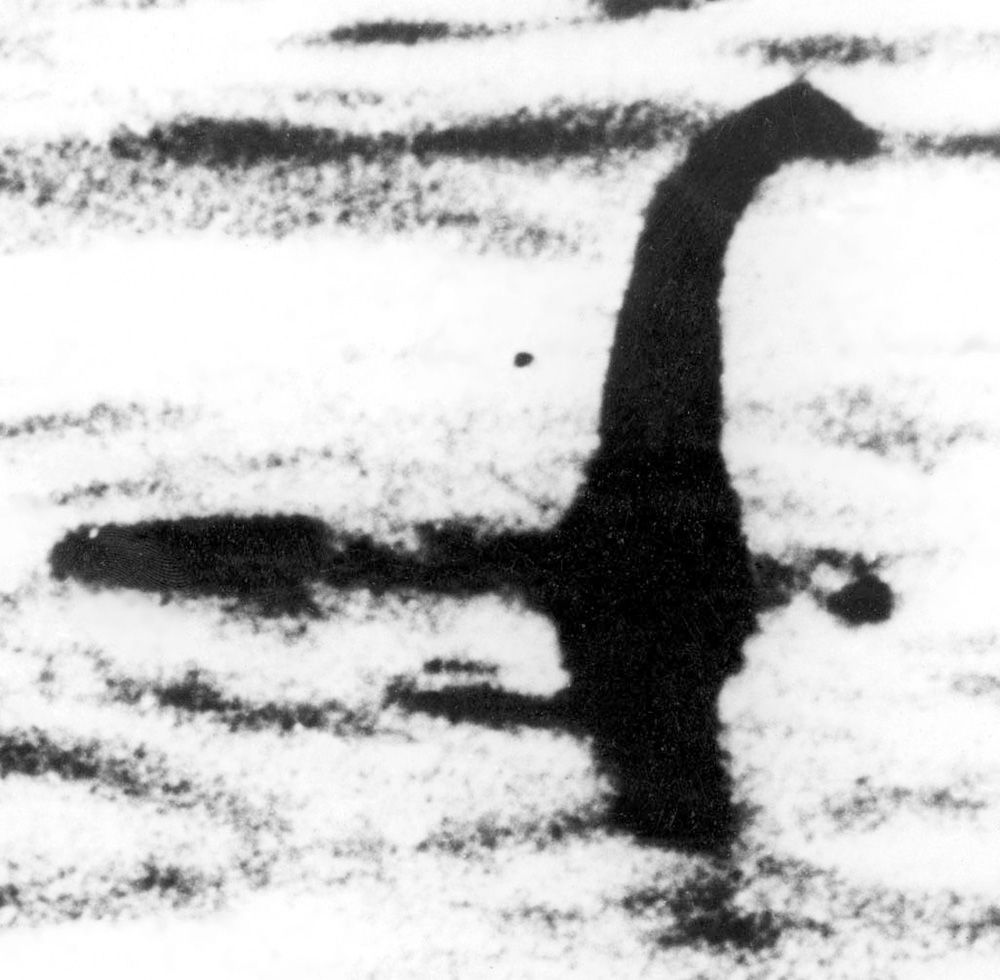

我小时候上的是罗马天主教小学。如果我可以讲述一些被修女们殴打和在圣器室被好色的神父摸来摸去的故事，这会对战斗无神论的事业有所帮助，但这些耸人听闻的故事都不是真的。相反，我成长的宗教环境称得上文雅和善。我的父母都不是狂热的《圣经》信徒，我的老师也都很善良。我并不觉得那所学校实行的温和说教给我带来了多大的伤害。在那里，信仰的灌输靠的是不断重复和加强，而不是赤裸裸的强迫。事实上，就很多方面来说，教会给我的影响都很微小。我转到一所非天主教中学后很快转向了循道公会，而到离开学校时，我完全放弃了宗教信仰。我成了一名无神论者，一个认为世界上没有上帝或诸神的人。
但即便是这种温和的宗教养成也有着长期的影响。当我还在念小学时，“无神论者”这个词都会引起一些阴森、邪恶、危险的黑暗印象。信仰上帝，遵从他的旨意，这些在我们看来是善的基本要素，因此，任何抛弃上帝的观念从定义上说都与善相违背。而无神论者就只能属于黑暗的一面。
当然，我现在不会相信任何组成这种有关无神论及其危害的悲观认识的看法。善与信仰上帝，对我来说，完全是两回事。无神论，按照正确的理解，是一种正面的世界观（positive world view）。但每当我想起“无神论者”这个单词时，天主教导师给它抹上的黑色污点仍然残留。在情感上，他们成功地把无神论与阴森、负面和邪恶联系在一起。这个污点现在仅仅是一种残留，在我有意识的思维中几乎不可察觉。但它却无法根除，我的注意力有时会不自觉地转向它，就像眼睛转向很难察觉到的瑕疵，这种瑕疵一旦被发现，就不会被忘记。
我的经历也许与众不同，其中的细节也许很少人能产生共鸣。然而，我相信我的经历中有一个方面对大众有共通性。我们人类经常宣称，是我们的思考能力把我们与其他动物区别开。我们是智人 ，即会思考的人科动物，思维的能力是人类最独特、最高级的属性。但我们并非完完全全是理性的。这不仅体现在我们经常为不理性或非理性的力量和欲望所左右，还体现在我们的思考本身也充满了情感因素。这些情感塑造了我们的思维，而通常我们不会意识到这一点。
我提醒这个事实的原因在于，本书讨论的几乎全都是无神论的理性依据。这样做并不为过。我们对任何观点的说明，最好的方法总是诉诸可能赢得最广泛支持的理性和论证。不过我也知道，我们进行这种理性讨论时并非没有先入为主的意见，并非抱有完全开放的心态。我们总是带着偏见、恐惧和坚持。其中一些情感没有理性基础，这使得它们有些无法在理性论证下进行探讨。对于无神论的讨论也是如此，几乎没有读者会持完全中立的态度。我猜测，很多读者，甚至是那些不信教的读者，对无神论的负面联想也要多过正面联想。
这一点非常重要，因为这样的联想会干扰我们进行清晰的思考，导致我们在没有扎实根据的情况下做出预先判断，抛弃理性论证。如果你对无神论者的认识根深蒂固，认为他们是可怜的、悲观的非道德主义者，那么支持相反观点的理性论证可能会遇到严重的心理排斥。
这些情感可能对我们有很牢固的控制，我们不可能仅凭意志力就摆脱它们。但我们可以试着增强对这些情感的意识，并对它们进行弥补。在本书中，我试图说明的是，无神论在很多方面与人们想的不同。为了使这个讨论尽可能公平，我想请大家努力抛开对无神论先入为主的黑暗观点，试着按论据本身的价值进行评判。
无神论事实上极容易定义：这是一种认为不存在上帝或诸神的思想。（下文中我只谈论对上帝的信仰，但本书的论证既适用于单一神论，也适用于多神论。）然而，很多人认为无神论者的观点是，既不存在上帝，也 不存在道德；或既不存在上帝，也 不存在生命的意义；或既不存在上帝，也 不存在人类的善。我们之后会看到，没有什么阻止无神论者相信道德、生命的意义或人类的善。仅仅在谈论有关上帝的信仰时，无神论才具有内在的否定性。对于生活的其他方面，无神论与其他思想一样，都可以是一种肯定性的观点。
不过，有一个方面无神论的否定性超越了上帝的存在这个论题。无神论者抛弃对上帝的信仰，这通常伴随着对任何超自然现实或超验现实的更广泛摒弃。例如，无神论者通常不会相信存在永恒的灵魂、逝后之世 [1] 、鬼神或超自然力量。虽然严格说来，相信这些并不妨碍无神论者成为无神论者，但无神论赖以维系的论据和观点自然地倾向于排除相信超自然或超验的观点，其中的原因我们后面会讨论到。
无神论不仅与有神论以及其他形式的上帝信仰相对，也与不可知论，即一种在信仰上帝和不信仰上帝之间存疑的态度相对。不可知论者认为，我们不可能知道上帝是否存在，所以唯一理性的选择是保留意见。对于不可知论者来说，有神论者和无神论者都太过极端，他们要么肯定上帝的存在，要么否定，而我们并无法获得足以证明其中任何一个观点的证据或论据。对上帝没有肯定性信仰的人是不可知论者，还是无神论者，这是一个重要的问题，或许与我们是否应该正面地信仰上帝的问题同样重要。我将在下一章详细讨论这个问题。
无神论根本上是否定性信仰系统的这一形象还带来了另外一个问题：很多人认为无神论者就是物理主义者（有时也称为唯物主义者）。初步的物理主义认为只存在物质对象。稍微进一步的版本是，只存在物理科学（物理学、化学和生物学）研究的对象。这个表述的重要性在于，有些物理学的基本力似乎并不是我们平常所说的“物质对象”，但物理主义者不会否定它们的存在。
只有在一个十分宽泛的意义上，多数无神论者才能称为物理主义者。也就是说，他们信仰的无神论至少部分上由自然主义决定，这种观点认为只存在自然世界，超自然世界并不存在。我们应该把这种观点称为“小写的自然主义”（naturalism），以便与某些哲学上的自然主义（Naturalism）相区分，后者可能有更为严格、更为具体的论断。我认为，这种小写形式的自然主义是无神论的核心。
这种自然主义能够与某种物理主义充分相合，这种物理主义结合了自然主义的世界观，同时进一步认为这个世界在本质上是物质性的。然而，由于物理主义本身并不要求后面这种观点，所以就不能说自然主义无神论者一定也是物理主义者。即便他们是物理主义者时，我们也须清楚，“在本质上是物质性的”这个说法可以有多种理解，它们各自的含义非常不同。
对这个观点的一种理解是认为它谈论的是实质，即所有事物赖以构成的“东西”。这种物理主义认为，“东西”只能是物质性的：不存在非物质性的灵魂、鬼神或观念。很多无神论者（很可能是大多数）都会认同这种物理主义。
不过还有一种被称为取消物理主义的更极端的观点。根据这种观点，不仅“东西”只能是物质性的，而且任何非物质性的东西都不会真正存在。例如，不存在诸如思想或观念这类东西。取消物理主义不太容易理解，因为它需要我们否定很多东西的存在，而这些东西又似乎是我们必须相信的。比如，我们自己拥有心灵似乎是我们整个存在的核心属性，我们又如何否定心灵的存在呢？
很多无神论批判者似乎认定无神论者就是物理主义者（事实上，这在大多数情况下是对的），认为物理主义就等同于取消物理主义（这个判断在逻辑上是错误的）。因此，取消物理主义明显的荒谬性就成了他们反证无神论信仰的证据。大致上说，无神论者会被塑造成虚无主义者，他们不仅不相信上帝的存在，而且否定除物理对象以外的任何事物的存在。如此贫乏的存在也就几乎无可取之处。
然而，物理主义并不必然意味着取消物理主义。所有物理主义都认为“东西”只能是物质性的。但这并不意味着（比如说）心灵不存在。它的意思是，不管心灵是什么，它不会是几块“东西”。如果认为心灵是几块“东西”，那就犯了吉尔伯特·赖尔所说的“范畴错误”。这个错误是把心灵和物质当作同一个范畴“东西”的不同种类。这是错误的。我的脑袋里并不存在以某种方式一起工作的两种不同东西——精神的（即心灵）和物质的（即大脑）。相反，对于物理主义者来说，我的脑袋里只有一块东西，即我的大脑。在很重要的意义上，我拥有心灵这个说法是正确的，因为我可以思考，拥有意识。然而，如果认为“我拥有心灵”这个命题蕴含了“我部分由精神的、非物质的实质构成”这个命题，这就错了。
如果这有点难以理解，那么我们以爱为例进行说明。没有人会认为爱是一种特殊的实质，即除了物理的“东西”，还有一种爱的“东西”。也没有人会认为爱是某种物理对象。然而，很多人相信爱，感受爱，给予爱，等等。爱是真实的，但它并不是实质。如果我们认同了这个看法，那么我们有什么理由不认同心灵是真实的，但它不是一种特殊的精神实质这个看法呢？很多真实的东西都不是几块“东西”那种意义上的事物，这里并没有什么高深的形而上学难题。
这些属于哲学的深水区，我们这里只能浅尝辄止。目前，我只想强调，无神论者并非大而化之地否定所有非物质性的东西，如果“物质性”意味着一种物理实质的话。多数无神论者的看法是，虽然宇宙中只存在一种“东西”，即物质性的东西，但从这种东西中衍生出了心灵、美、情感、道德价值等，简言之，衍生出了所有使我们人生丰富多彩的现象。
应该记住，大部分无神论观点并非植根于物理主义的种种论断，而是来自更为广泛的自然主义的观点。我们只需要记住，自然世界不仅是原子和各种基本物理力的家园，同样是意识、情感和美的家园。再次强调，无神论者否认上帝的存在，但他们不是天生的否定论者，这是上述讨论的全部要旨。
我写本书的主要目的是要为无神论的肯定性提供论证，这样的无神论并非简单地蔑视宗教信仰而已。换句话说，我希望本书在说明为什么一个人不 应该是有神论者的同时，也能说明为什么一个人应该是无神论者。很多无神论批判者会说这是不可能的，因为无神论寄生在宗教之上。这一点从其名称就可以看出来，无神论是“无”和“神论”的结合，即对有神论的否定。因此，无神论在本质上就具有否定性，它的存在依赖它所摒弃的宗教信仰。
我认为这种观点有着很深的错误。它初始的可能性建立在一种非常粗糙且具有缺陷的推理基础之上，我们把这种推理称为词源谬误。这种错误是认为我们理解一个词的意义的最佳方法是了解它的起源。很显然，事实并非总是如此。例如，“哲学”（philosophy）一词的词源是希腊语中的“智慧之爱”。然而，我们无法通过这个词源来了解当今哲学的意义。同样，如果你走进一家意大利餐馆，仅仅知道“tagliatelle”（意大利干面条）的字面意思是“小鞋带”，那么如果你点了一份“tagliatelle”，你就不会知道上来的会是什么。因此，无神论这个单词是对有神论的否定，这一事实不足以说明无神论本身具有否定性。
把词源学放到一边，我们可以看到无神论被披上否定性的外衣仅仅是一种历史巧合。我们来看下面这个故事，它的开头是事实，后面是我们的虚构。
苏格兰有一个很深的湖，叫作尼斯湖（Loch Ness）。很多苏格兰人（几乎可以肯定是大多数）认为这个湖与苏格兰的其他湖一样。他们这种看法我们可以称为正常看法。但这并不是说，他们没有具体看法，仅仅是这个看法如此之普通常见，已无须深入说明。他们认为这个湖是某种大小的自然现象，某些鱼生活其中，等等。
然而，有些人认为这个湖里有一种奇怪的生物，称为“尼斯湖水怪”。很多人声称看到过它，虽然至今仍没有存在这种水怪的有力证据。目前我们的故事仍都是事实。现在，想象一下这个故事会如何继续。
相信水怪存在的人越来越多。没过多长时间就出现了一个新词来称呼这些人：他们被有些戏谑地称为“尼斯人”（Nessies）。［很多宗教名称都源于嘲讽的昵称：循道公会（Methodist）、贵格会（Quaker），甚至基督徒（Christian）都是如此。］然而，随着尼斯人数量的增长，这个名字已不再是一个玩笑。虽然水怪的存在仍缺乏有力的证据，但不久成为尼斯人就成了常态，早先被看作正常的那些人现在反而成了少数。他们也有了自己的名字“反尼斯人”（Anessies），即不相信水怪存在的人。

图1 不相信这个水怪存在的人就是持否定态度吗？
那么可以说反尼斯人的观点寄生于尼斯人的观点吗？这种说法不可能是正确的，因为反尼斯人的看法要早于尼斯人的看法出现。然而，关键并不在于年代的先后。关键是，即使尼斯人不存在，反尼斯人也会有着与现在相同的看法。尼斯人的兴起所带来的结果是它为一套看法命了名，而这一套看法早已存在，只不过人们认为它稀松平常，无需特别的标签。
这个故事的意义应该十分清楚了。无神论者所持有的是一种特定的世界观，它包含有关世界以及世界中的事物的很多看法。有神论者认为还有另外一种存在——上帝。如果有神论者不存在，无神论者还是会存在，但可能他们不会有这么一个特殊的名字。由于有神论成了我们这个世界的主流，如此多的人相信上帝或诸神的存在，因此无神论就从有神论的反面获得了定义。这不意味着无神论寄生于宗教，这与反尼斯人的看法并不寄生于尼斯人的看法一样。
我们看看如果所有人都不再信仰上帝会发生什么，也许可以最清楚地理解无神论寄生于宗教信仰这种说法的荒谬性。如果无神论寄生于宗教，那么没有宗教的话它就肯定不存在。但在这个想象中的情况下，我们看到的不是无神论的终结，而是它的胜利。无神论不需要宗教，这与无神论者不需要宗教一样。
总之，本书的目的在于表达一种对无神论的肯定性观点，它抛弃了认为无神论只能寄生于有神论，只能作为有神论对立面而存在的错误观点，或者说抛弃了认为无神论本质上除了否定上帝的存在，还否定其他一系列信念的错误观点。就这两方面来说，无神论在本质上都不具有否定性。无神论者对于宗教信仰的态度可以是漠视，而非敌视。相较于许多有神论者，他们可能对美学体验更为敏感，更有道德感，更能与自然之美契合。没有什么理由认为他们比教徒更容易悲观或沉郁。
然而，我不想落入陷阱，如此大费周折地纠正偏见，最后却塑造了一幅过分乐观的无神论画面。多数无神论者把自己看作现实主义者，无神论是他们直面世界、无须借助迷信或虚构的令人宽慰的逝后之世或仁慈的力量来照看我们的意愿的表现，而要成为这样的现实主义者就需要接受这个世界上发生的很多事并不美好的事实。丑恶的事情会发生，人们会过着悲惨的生活，我们根本无法知道盲目的运气（而非命运）何时会介入，然后改变我们的生活，不管是向着好的方向，还是坏的方向。
由于这一点，无神论者倾向于把无节制的、盲目的欢乐看作一种诅咒。无神论者在那些在汽车保险杠上贴着“如果你爱基督，请鸣笛”的福音派基督徒身上看到了一种阴冷的幽默。此类贴纸滑稽和让人沮丧的地方在于它反映了信徒们兴高采烈的自信，而他们只须提醒自己是宗教信徒就能获得一点这种对世界的良好感觉。这种粗糙的简单世界观具有黑色幽默，因为它表明人类是多么容易屈服于愚昧，而它能给人安慰。
欢呼雀跃的无神论也同样令人厌恶，不过好在无神论内在的现实主义从整体上提供了一种免疫力。因此，你不会看到“如果你是无神论者，请鸣笛”字样的汽车贴纸，至少不会看到一本正经的类似贴纸。然而，当我们试图推翻无神论普遍的否定性形象时，我们很可能会过分强调它的肯定性。而事实是，无神论者与肯定性或否定性观点之间并没有先验的联系。我在论证无神论不一定具有否定性，它可以是肯定性观点时，并不是说成为一名无神论者就拿到了通向幸福的通行证。在生前取得成就所要付出的努力要比在身后多得多，而认为即使清醒地接受这个现实，人生成就仍可为我们企及，这是无神论的现实主义和乐观主义的标志。